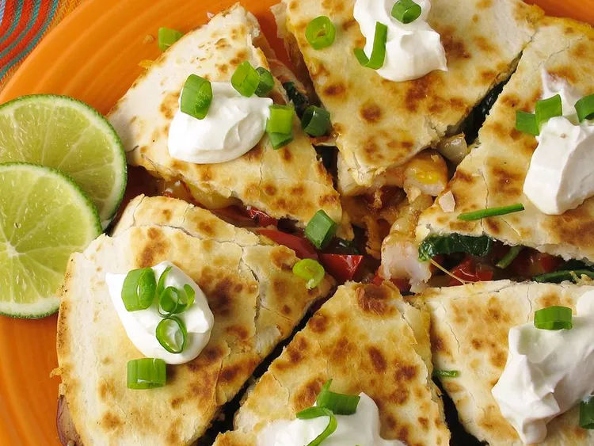

Shrimp Quesadillas

Description
Spicy Quesadillas made of fajita style shrimp, bell peppers, and seasoned with cumin, jalapeno, chili powder, and lime. Best served warm.
Ingredients
- 2 tablespoons vegetable oil
- 1 onion, sliced
- 1 red bell pepper, sliced
- 1 green bell pepper, sliced
- 1 teaspoon salt
- 1 teaspoon ground cumin
- 1 teaspoon chili powder
- 1 pound uncooked medium shrimp, peeled and deveined
- 1 jalapeño pepper, seeded and minced
- 1 lime, juiced
- 1 teaspoon vegetable oil, or as needed
- 6 large flour tortillas
- 3 cups shredded Mexican cheese blend, divided
Steps
- Heat 2 tablespoons vegetable oil in a large skillet over medium-high heat. Add onion, red bell pepper, and green bell pepper; cook, stirring frequently, until onion is translucent and peppers are soft, 6 to 8 minutes.
- Add salt, cumin, and chili powder; stir to coat onion and bell peppers.
- Add shrimp; cook and stir until shrimp are opaque and no longer pink in the center, 3 to 5 minutes. Remove skillet from heat and stir in minced jalapeño and lime juice.
- Heat a skillet over medium heat and brush with about 1 teaspoon vegetable oil. Place one tortilla in the hot oil; spoon about 1/6 of the shrimp filling and 1/2 cup Mexican cheese blend on one side of tortilla. Fold tortilla in half.
- Cook until bottom of tortilla is lightly browned, about 5 minutes; flip and cook other side until lightly browned, 3 to 5 minutes. Repeat with remaining tortillas and filling.